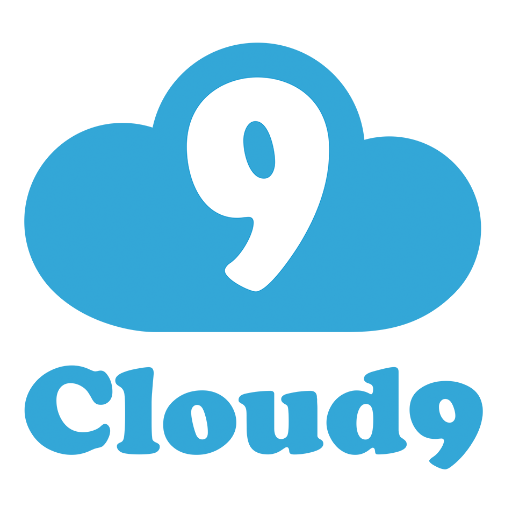
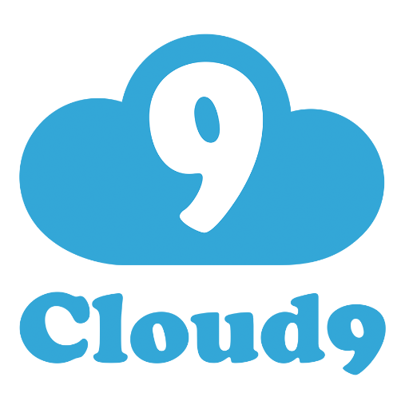

The term "cloud computing" is everywhere. In the simplest terms, cloud computing means storing and accessing data and programs over the Internet instead of your computer's hard drive. The cloud is just a metaphor for the Internet.
Software as a service (or SaaS) is a way of delivering centrally hosted applications over the Internet as a service. SaaS applications are sometimes called web-based software, on-demand software, or hosted software.
Whatever the name, SaaS applications run on a SaaS provider’s servers.
Instead of installing and maintaining software, you simply access it via the Internet, freeing yourself from complex software and hardware management. The provider manages access to the application, including security, availability, and performance.
SaaS business applications are usually accessed by users using a thin client via a web browser.
Salesforce provides software as a service to companies using a B2B model.
Salesforce is cloud computing company based in San Francisco,California.Its main sales revenue comes from a Customer Relationship Managment (CSM) product.
Salesforce also sells commercial applications of social networking through acquisition and internal development.
Infrastructure as a Service, sometimes abbreviated as IaaS, contains the basic building blocks for cloud IT and typically provide access to networking features, computers (virtual or on dedicated hardware), and data storage space.
Infrastructure as a Service provides you with the highest level of flexibility and management control over your IT resources and is most similar to existing IT resources that many IT departments and developers are familiar with today.
Amazon provides infrastructure as a service through their AWS (Amazon Web Services) platform.The AWS Cloud provides a broad set of infrastructure services, such as computing power, storage options, networking and databases, delivered as a utility: on-demand, available in seconds, with pay-as-you-go pricing.
Communications as a service (CaaS) is a collection of different vendor services that facilitate business communications.
Organizations may use these and similar services to lower costs and increase efficiency for business processes involving audio or video telecommunications.
Gmail provides communication as a platform through their email client, to both private users and businesses.
Gmail is a free, advertising-supported email service developed by Google. Users can access Gmail on the web and using third-party programs that synchronize email content through POP or IMAP protocols.
Gmail started as a limited beta release on April 1, 2004, and ended its testing phase on July 7, 2009.